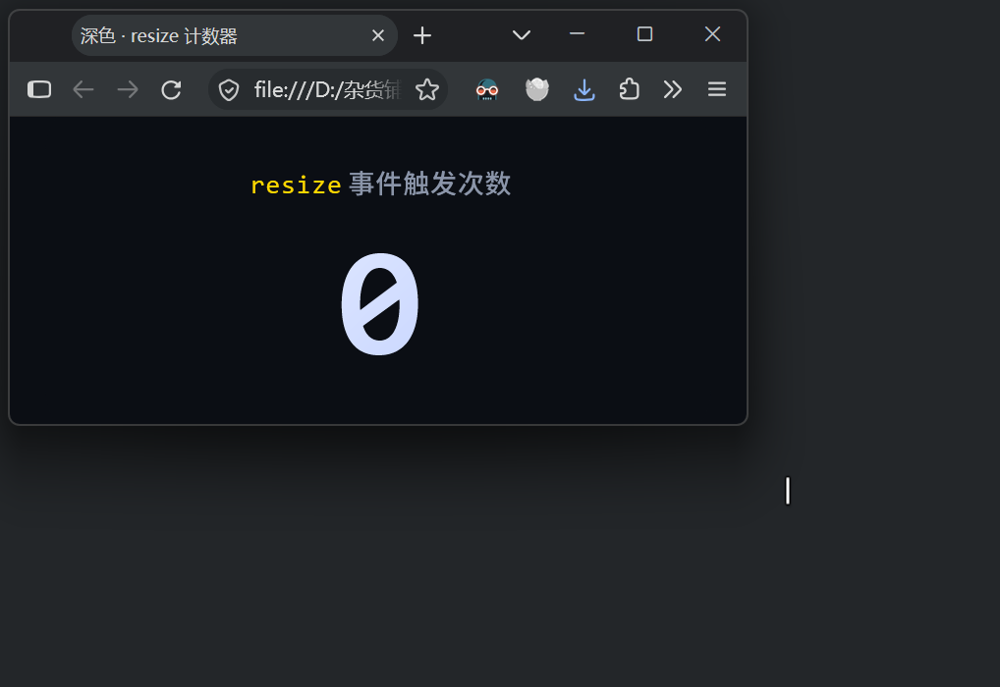
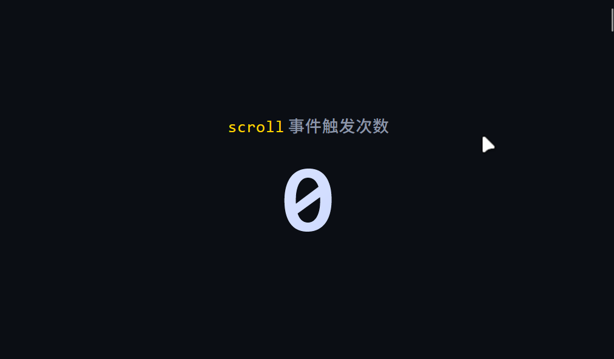
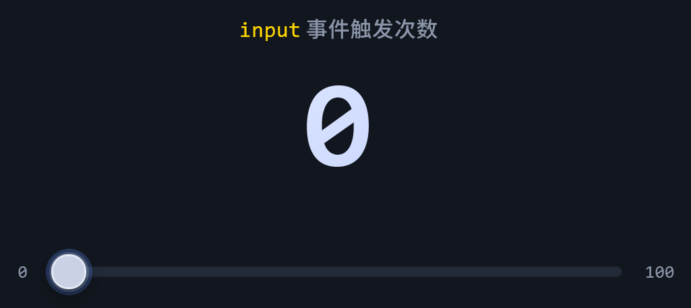
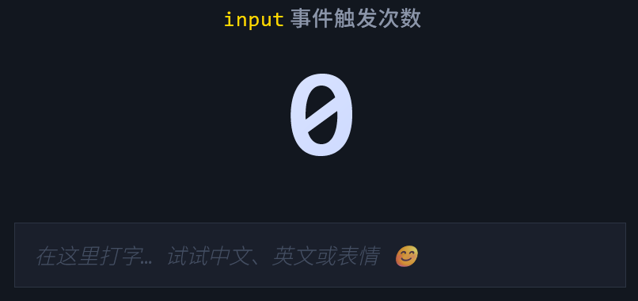

防抖原创
作者： 苏扬
日期： 2026年11月5日

作者： 苏扬
日期： 2026年11月5日
抖动是指高频事件短时间内频繁触发绑定了对性能需求较大的函数热点函数，导致程序或页面不断卡顿的现象，给人感觉像是在抖动。
//短时间内会被频繁触发的事件，绑定了比较消耗性能的函数，会导致"抖动"，即频繁的卡顿
元素.addEventListener("高频事件", 热点函数);
短时间内被频繁触发的事件主要有这么几种：
//此事件会在视口尺寸改变时频繁触发
window.addEventListener("resize", 函数);

用鼠标拖拽的方式改变浏览器窗口大小时，会频繁触发此事件。
//此事件会在元素内部滚动时频繁触发
元素.addEventListener("scroll", 函数);

在元素内部滚动时，会频繁触发此事件。
//此事件会在元素内部移动鼠标时频繁触发
元素.addEventListener("mousemove", 函数);
在元素内部移动鼠标时，会频繁触发此事件。
//此事件会在拖拽滑块时频繁触发
input[type="range"].addEventListener("input", 函数);

input事件主要用于需要实时显示数据的场景，比如一边拖拽滑块，一边实时显示滑块的数值。如果没有实时显示数据的需求，可以改用change事件，此事件只会在滑块位置最终确定比如松开鼠标且值有变化时才会触发，这种情况下就无需防抖。
//此事件会在每次输入文本时触发
input[type="text"].addEventListener("input", 函数);

在文本框中每次输入字符都会触发input事件。
事件被频繁触发是无法改变的，因为事件被触发的底层代码写在浏览器的JavaScript引擎中。是否抖动，取决于绑定事件的函数对性能的消耗高低。对性能影响较大的函数，就属于热点函数。
什么样的函数属于热点函数呢？这里举几个例子：
用一个计时器，从事件触发时开始计时，如果在限定时间内再次触发事件，就重新计时；只有计时器到达限定时间，才会执行绑定的函数。如此，可确保限定时间内函数只会执行一次。
只有防抖计时器到达限定时间，才会更新数值，在限定时间内不会重复更新。
计时器变量，这个变量必须放在函数的外部，才能保证清空和启动的是同一个计时器。
//错误写法
function 函数() {
let timer = null; //错误，timer为局部变量，每次声明的timer都是新的
clearTimeout(timer); //清空的timer是新的，不是上一次的timer
timer = setTimeout(() => {
业务逻辑;
}, 计时时长));
}
//--------------------------------------------------
//正确写法
let timer = null; //timer必须写在函数外部
function 函数() {
clearTimeout(timer); //清空的timer是上一次的timer
timer = setTimeout(() => {
业务逻辑;
}, 计时时长);
}
然而，这样的设计带来两个问题：
为了解决上述问题，又不能让计时器成为函数内部的局部变量，我们需要用闭包来实现这个需求。
function 业务函数() {
热点业务逻辑;
}
//传入函数，返回防抖函数
function 防抖(函数, 计时时长) {
//此"timer"在"防抖"函数结束后不会消失，因为它被内部的"返回函数"引用，形成闭包
//同时此"timer"也不是全局变量，它只在"防抖"函数的作用域中存在，外部无法访问
//每次调用"防抖"函数，都会创建一个新的"timer"，彼此独立，互不干扰
let timer = null;
return function (...args) {
clearTimeout(timer);
timer = setTimeout(() => {
函数.apply(this, args); //此处的"this"指向防抖的调用者
}, 计时时长);
};
}
const 防抖业务函数 = 防抖(业务函数, 计时时长);
元素.addEventListener("高频事件", 防抖业务函数);